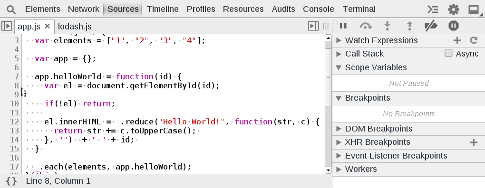

W05 Notes
Since the nature of this week's reading was about debugging,
I decided to take notes in order to remember the most important topics I would like to remember.
Debugging
- Use strict mode to avoid sloppy code. 'use strict'; at the top of each file or function.
- Use the self-enclosing function to put your entire JS code to avoid conflict with third-party libs.
- Use linting tools to help you write better code in dev and/or at runtime.
Debugging in the browser
- Alert dialogs alert() are an easy way to display a message to the user or as a dev tool to get feedback that the code is reaching that line
- Alert dialogs also have confirmation and prompt dialogs to help capture data in an easy way.
- console.log() is a great way to print values, let us know if our code is being executed, or just for documentation.
- I love Google Chrome dev tools. I love that I can put conditional break points to pause the execution of my code on a given condition.
- Conditional breakpoints are great when we need to debug a code that has many iterations, but we care only about one case in specific.
- Such as printing a list of names. We might want to debug the printing logic for names with special characters. We can use regular expressions or conditions to pause the execution when a name with special characters is found.

- Errors are a good way to let developers or users know about a specific issue. Using typed errors allows us to create default exceptions for business and logic errors. We can use the name of the type or the message to quickly find the line that threw it.
- Using appropriate errors help us make a code more readable. Throwing a range error RangeError() when a numeric exception happened is better than just throwing a generic error.
- Try, catch, and finally are an excellent way for us to plan for things that can go wrong, give users a way to proceed without disrupting their session, and preventing server or app crashes.
- Finally guarantees that the code we put inside its scope is gonna get executed.
Testing
- Red, green, refactoring helps us create the mentality about writting test first, before diving into the actual code.
- Testing can save us time. By writing a quick test to validate our logic we can catch errors before deploying to production.
- Regression tests can help us prevent previous errors from repeating.
- Testing can make our code easier to maintain because when dependencies are hard to test, it is an indicator that we need to decouple our code even more.
- Testing can make our code more readable because we tend to write smaller functions when we write tests for them, they are documented, the other developers can see the input and output of the function, and can make changes with the assurance that the test will pass once the refactoring is done and nothing else will break :)